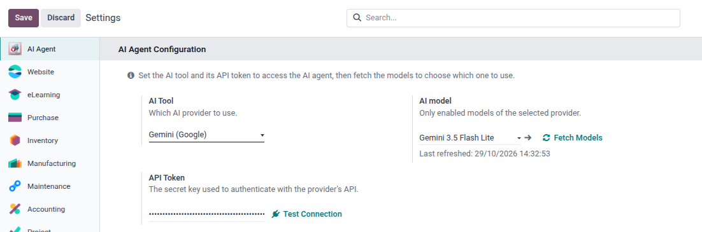
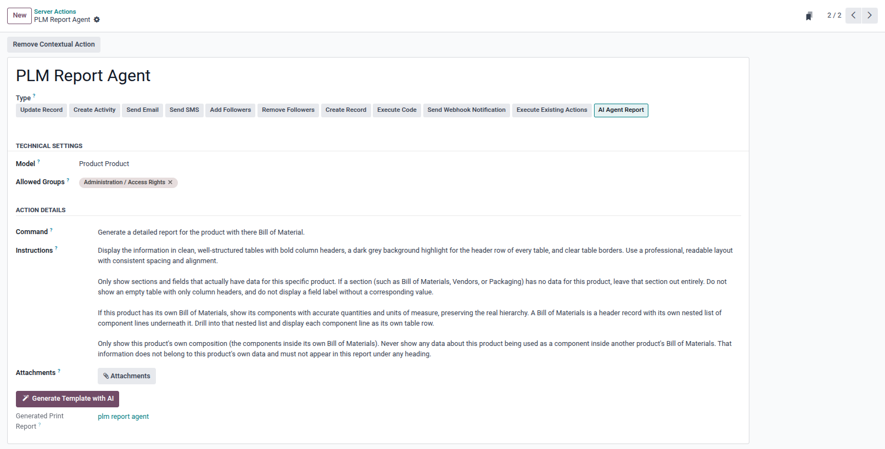
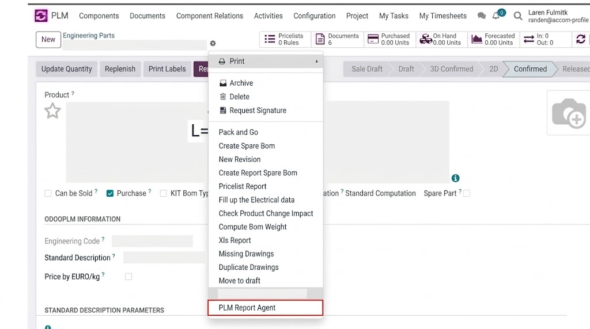
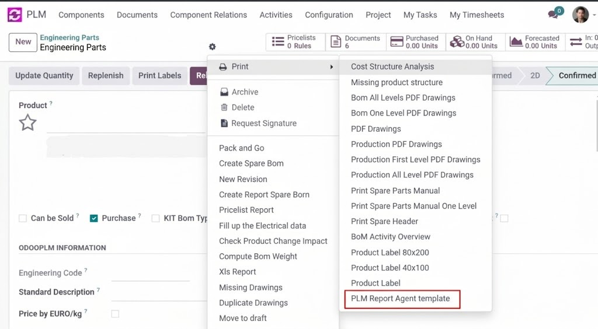

This module integrates AI-powered report generation into Odoo using Ai tools. It allows administrators to configure AI Server Actions with predefined instructions for generating customized reports. It supports AI Virtual XML Template Generation to create and reuse report structures. Users can generate PDF reports directly from Odoo records and store them as standard attachments.
In Settings → AI Agent choose your AI provider, paste in its API token, test the connection, then fetch and pick a default model.

Go to Settings → Technical → Actions → Server Actions, create a new one, set its Model, and set Action Type to AI Agent Report. Then fill in:



Note: To modify the existing report design, use Generate Template with AI again from the Server Action.